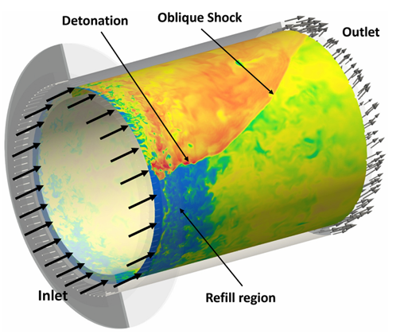
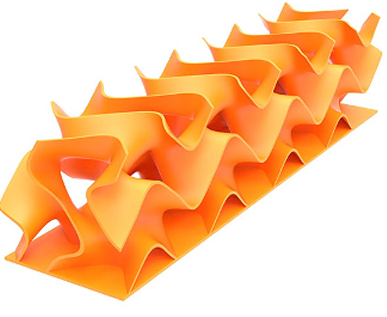

Laboratoire d'Échange Thermique (DIEF) — Università degli Studi di Firenze (ITA) — Mars 2026 → Septembre 2026
La recherche continue d'efficacités thermodynamiques supérieures dans la propulsion aérospatiale et la génération d'énergie pousse l'industrie à explorer de nouveaux cycles de combustion. Le moteur à détonation rotative (RDE) s'inscrit dans ce cadre via le concept de combustion à apport de pression (Pressure Gain Combustion). Il exploite le cycle thermodynamique de Humphrey (apport de chaleur à volume quasi-constant), offrant une efficacité théorique nettement supérieure au cycle classique de Brayton à pression constante.
Fonctionnement : Contrairement à une chambre classique où la réaction se fait par déflagration (propagation subsonique), le RDE utilise une onde de détonation supersonique se propageant en continu de manière circonférentielle dans un canal annulaire. Les réactifs injectés axialement sont instantanément comprimés et enflammés par l'onde de choc, libérant une énergie propulsive 5 à 10 fois supérieure à celle d'un système conventionnel.
Applications potentielles : Ce moteur est le candidat idéal pour propulser les futurs aéronefs hypersoniques, les missiles de croisière ou les lanceurs spatiaux de nouvelle génération. Sur le plan civil, son intégration dans des turbines à gaz industrielles permettrait une production d'électricité propre et à très haut rendement.

Schéma et propagation de l'onde de détonation circonférentielle au sein de la chambre annulaire (Rapport technique - Réf [5])

Visualisation 3D d'une maille élémentaire Schwarz Diamond fabriquée par fabrication additive métallique
Faisant face à un flux incident de plusieurs mégawatts par m² (températures de gaz atteignant T_{gas} = 2200 K), la paroi de la chambre doit être refroidie de manière ultra-efficace pour maintenir le matériau sous sa température limite technologique. Pour y parvenir, le projet rejette les méthodes perturbant l'écoulement principal (comme le refroidissement par film) au profit d'un refroidissement interne intensifié utilisant des structures innovantes : les TPMS (Triply Periodic Minimal Surfaces).
Qu'est-ce qu'un TPMS ? Il s'agit d'architectures géométriques poreuses complexes définies mathématiquement dans l'espace. Elles se caractérisent par une surface moyenne nulle en tout point. Pour ce projet, la topologie Schwarz Diamond a été retenue.
Pourquoi cette géométrie ? D'une part, les TPMS éliminent complètement les zones de concentration de contraintes mécaniques aux intersections solides, un atout majeur pour la fabrication additive métallique. D'autre part, la topologie Diamond développe la surface spécifique (S_v, surface de contact entre le fluide et le mur) la plus élevée pour une porosité donnée. Sa haute tortuosité force l'air de refroidissement à suivre des trajectoires sinueuses à forte courbure, brisant continuellement le développement des couches limites thermiques. Elle agit comme un véritable mélangeur statique permanent qui maximise le transfert convectif (h . S_{echange} aussi appelé S_v).
Faisant face à un flux incident de plusieurs mégawatts par m², un refroidissement purement convectif sur le métal nu exigerait des débits d'air prohibitifs, détruisant le rendement global du moteur.
Pour atténuer cette charge thermique d'entrée, une barrière thermique en céramique (TBC — Thermal Barrier Coating) en zircone stabilisée à l'yttria (YSZ), caractérisée par une conductivité thermique ultra-basse (k_{tbc} = 0.9 W}/(m . K)), est déposée sur la face interne du liner avec une épaisseur nominale de t_{tbc} = 0.25 mm}.
L'introduction de ce revêtement est modélisée par un réseau de résistances thermiques cylindriques en série :
Flux thermique total entrant appliqué à la structure métallique.
Flux thermique atténué de -40.9%, rendant le refroidissement par air physiquement viable.
La première phase de mon stage a consisté à poser les bases théoriques et à coder un solveur analytico-numérique robuste en Python capable de prédire l'équilibre aérothermique de l'échangeur sans recourir immédiatement à des simulations 3D lourdes.
Le modèle résout simultanément un système non-linéaire à 4 équations et 4 inconnues couplées (débit massique {m}, Reynolds Re, Nusselt Nu, et température de sortie T_{out}) pour une puissance thermique Q_{tot} donnée :
Le système couplé est mathématiquement ramené à une équation scalaire sous forme de résidu : F(T_{out}) = h_{Nu}(T_{out}) - h_{LMTD}(T_{out}) = 0.
Sur les 200 000 itérations de Monte-Carlo, seuls 913 points de fonctionnement ont franchi l'ensemble des filtres technologiques, mettant en lumière le caractère hautement contraint du problème. L'analyse multicritère a révélé un Front de Pareto entre l'élévation de température du fluide (&Delta T) et la perte de charge (&Delta P).
Pour extraire la meilleure configuration, j'ai implémenté une fonction de score pondérée (Score = 1.0 . &Delta T^* - 0.5 . &Delta P^* - 0.3 . Re^). Le point optimal identifié (Score: 0.88) présente les caractéristiques suivantes :
Cette deuxième phase du projet, actuellement en cours au laboratoire de Florence, vise à confronter le modèle analytique macroscopique à des calculs CFD 3D haute fidélité pour capturer les phénomènes hydrodynamiques locaux complexes (recirculations, gradients thermiques internes).
Modélisation sous Ansys Fluent du transfert thermique conjugué : résolution simultanée de la conduction thermique 3D dans l'Inconel (matrice solide du TPMS Diamond) et de la convection forcée turbulente de l'air de refroidissement circulant à grande vitesse dans les canaux sinueux.
Développement en cours de scripts d'automatisation (Python et fichiers journaux Fluent) pour générer automatiquement le maillage fluide/solide, appliquer les conditions aux limites extraites de Monte-Carlo, lancer le solveur Fluent et exporter les profils de pression locaux.
Les dernières étapes du projet s'orienteront vers la mise en place d'une boucle d'optimisation mathématique automatisée basée sur des modèles de substitution :